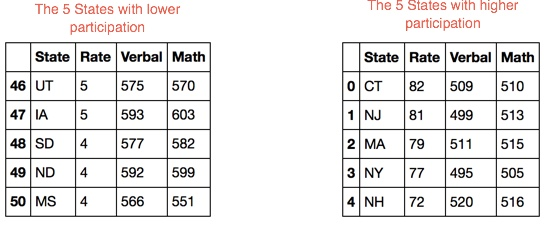
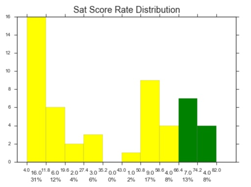
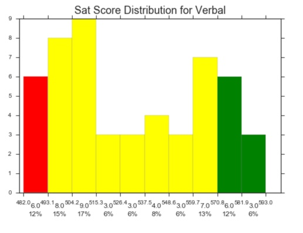
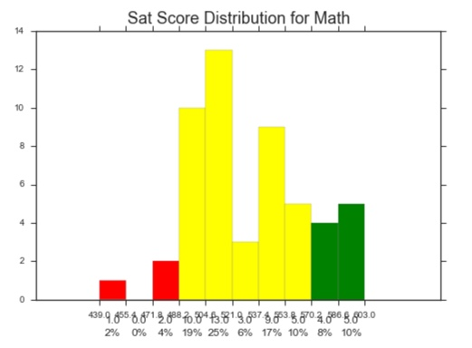
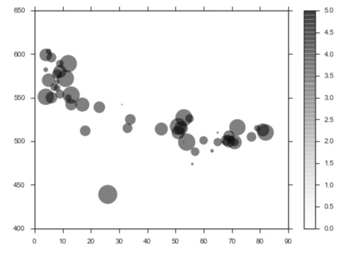

For our first project, we took a look at SAT scores around the United States. We explored this data to see what we can learn using the descriptive statistics skills covered in the first week. Our client is the College Board.
Participation rate has a big impact on state average SAT scores. In any state, the top students on the SAT are those most eager to take it, so states with low participation rates "seem" to have higher SAT scores. However, we cannot rely on raw average scores because these averages might be biased by participation rates. In the coming weeks we will learn how to apply more advanced statistical methods to get a more real Math annd Verbal scores.
 
The distribution of data is not is symmetric is skewed to the right. For a right skewed distribution, the mean is typically greater than the median. The tail of the distribution on the right hand (positive) side is longer than on the left hand side.

Histogram of the verbal Rate

Histogram of the math Rate

We can see here that the the scores (verbal and math) are inversely proportional to the participation rate.